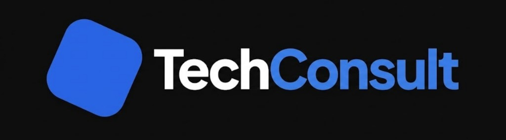

TechConsult es una landing page premium diseñada para firmas de consultoría tecnológica que buscan una presencia digital robusta, moderna y minimalista. Este proyecto combina un diseño "Dark Mode" elegante con efectos visuales avanzados y una arquitectura técnica ligera.